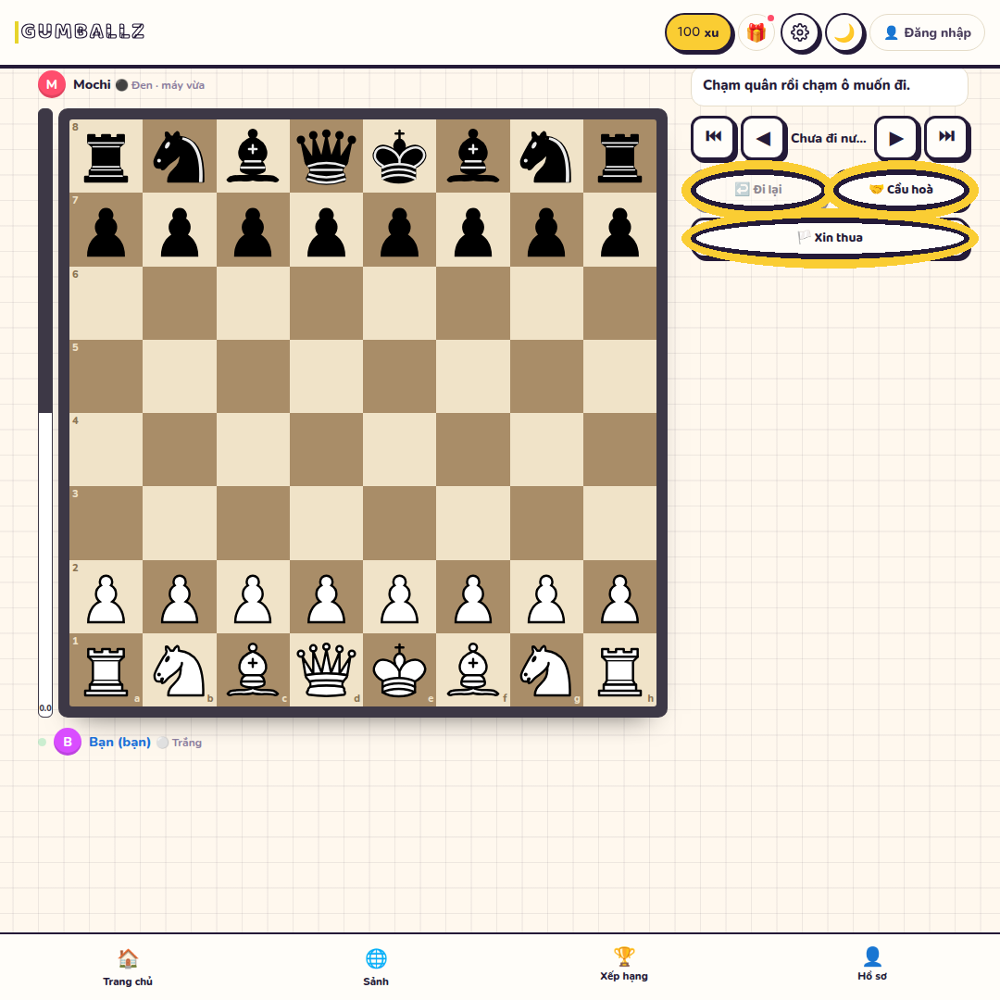

Mục tiêu: chiếu bí Vua đối phương – Vua bị tấn công mà không còn cách nào thoát.
Cách đi quân
- Vua: 1 ô mọi hướng. Hậu: ngang, dọc, chéo bao xa cũng được.
- Xe: ngang, dọc. Tượng: chéo. Mã: hình chữ L, nhảy qua quân khác được.
- Tốt: tiến 1 ô (nước đầu được tiến 2), ăn chéo 1 ô.
Nước đặc biệt
- Nhập thành: Vua đi 2 ô về phía Xe, Xe nhảy qua Vua. Chỉ được khi cả hai chưa đi, giữa không có quân, Vua không bị chiếu và không đi qua ô bị chiếu.
- Bắt tốt qua đường: tốt đối phương vừa tiến 2 ô ngang qua tốt mình thì được ăn chéo ngay nước kế.
- Phong cấp: tốt tới hàng cuối được đổi thành Hậu, Xe, Tượng hoặc Mã.
Hoà cờ
- Hết nước đi mà không bị chiếu (pat), lặp lại thế cờ 3 lần, 50 nước không ăn quân và không đi tốt, không đủ quân để chiếu bí, hoặc hai bên đồng ý.
Trợ giúp
- 💡 Gợi ý: viền xanh nước nên đi. 📊 Thanh đánh giá: cho biết bên nào đang lợi. Cả hai tự bật/tắt được; khi hai người đấu nhau thì chủ phòng quyết định có cho phép hay không.
- Bấm ◀ ▶ để xem lại các nước đã đi.